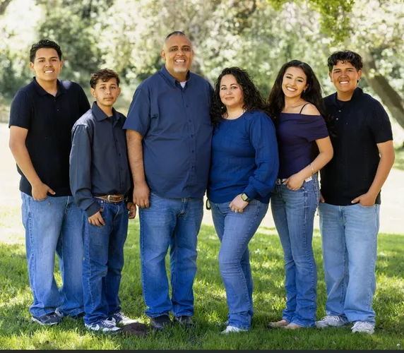

Our Money
Protect Our Taxes
Challenge wasteful spending and keep family budgets in mind.
Re-Elect Andrew Sandoval
Independent leadership for the people and neighborhoods of District 5.

Our Money
Challenge wasteful spending and keep family budgets in mind.
Our Community
Put local tax dollars into roads, parks, school safety, and community facilities.
Our Future
Keep District 5 priorities at the center of City Hall decisions.
District 5 First
Andrew’s focus is simple: local tax dollars should serve local residents and the neighborhoods they live in.
Our Money
Protect family budgets, challenge wasteful spending, and oppose public subsidies that put special interests ahead of residents.
Our Community
Direct taxpayer dollars into District 5 road repairs, safer school crosswalks, parks, and community facilities.
Our Future
Keep long-term neighborhood priorities at the center of City Hall decisions and build coalitions that move local projects forward.

For years, District 5 was routinely treated as the “forgotten district.” Andrew Sandoval refused to accept empty promises and pushed for meaningful, multi-million-dollar investments in streets, parks, and school safety.
By building coalitions and working directly with other Council members, Andrew secured funding aimed at long-standing neighborhood priorities that had been ignored for decades.
Explore Andrew’s prioritiesAndrew’s message at City Hall is consistent: working families earn every dollar, and local government should treat taxpayer money with the same discipline families use at home.
Stood firm against higher trash and sewer rates on local residents.
Questioned unnecessary corporate subsidies and budget priorities that did not benefit working families.
Insisted that taxpayer dollars go directly into District 5 road repairs, safer crosswalks, and park improvements.
Real Experience Stretching a Budget
Andrew knows what it takes to make a dollar go further. His campaign connects that everyday household discipline to City Hall decisions about spending, utility costs, and neighborhood priorities.
“When I stand up to wasteful spending at City Hall, I do so because I know how hard working families labor to earn every single dollar. I promise to never waste your hard-earned tax dollars.”
Andrew Sandoval
Andrew’s campaign says his responsibility is to District 5 residents—not political lobbyists or corporate PACs seeking special treatment or public handouts.
A clear standard for City Hall
No corporate subsidies that prioritize special interests over local residents. No unnecessary rate increases. Yes to direct investment in the neighborhoods taxpayers call home.
Salinas City Council · District 5
Re-Elect Andrew Sandoval for Salinas City Council.